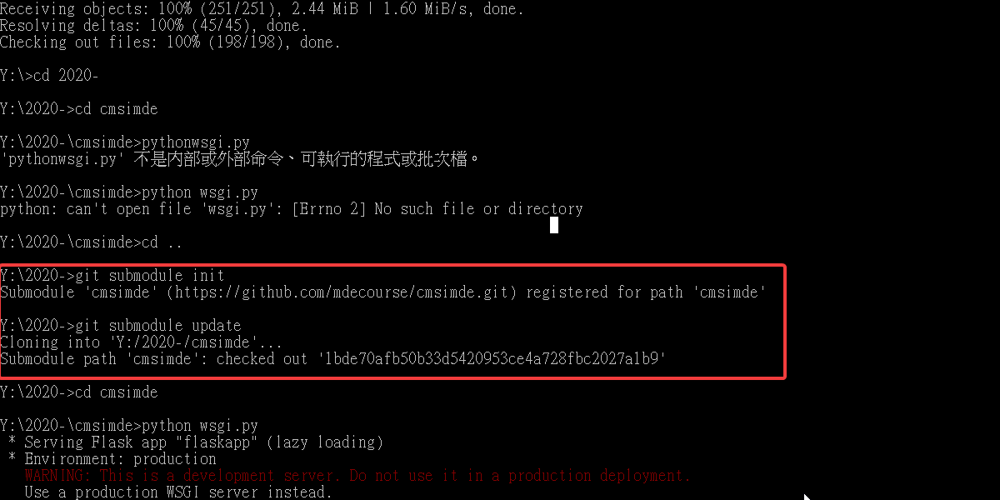
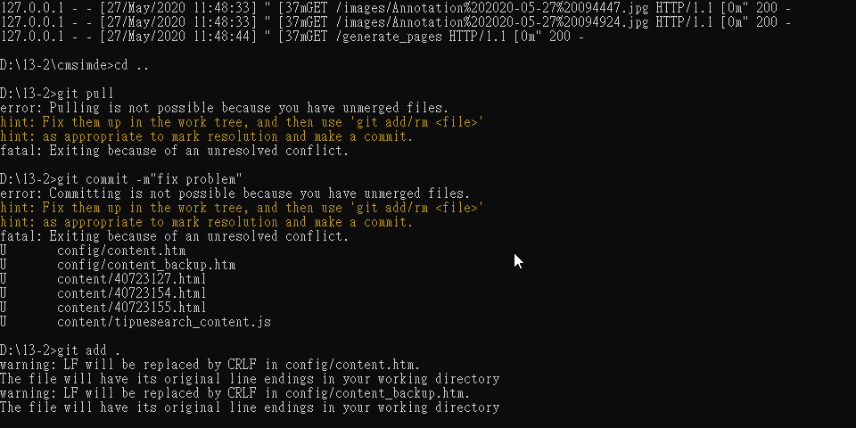
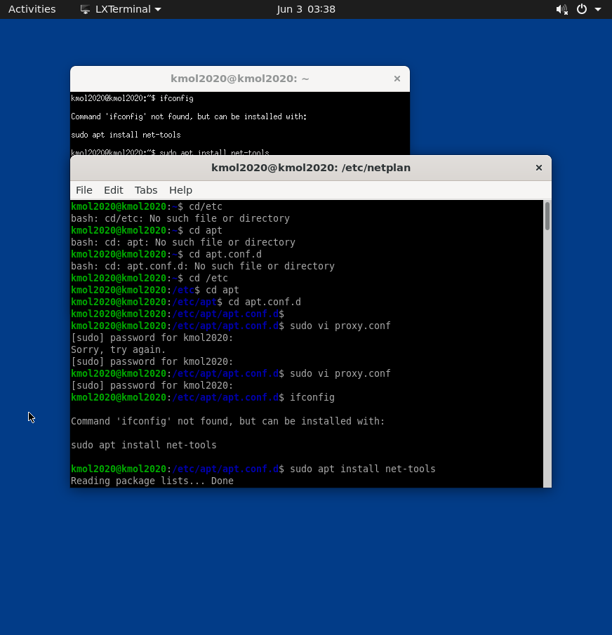
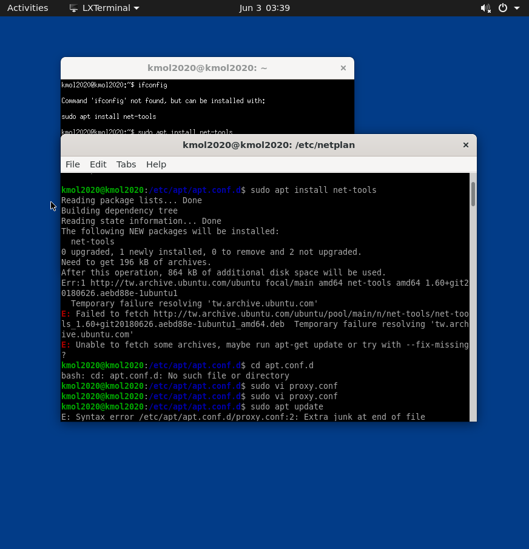
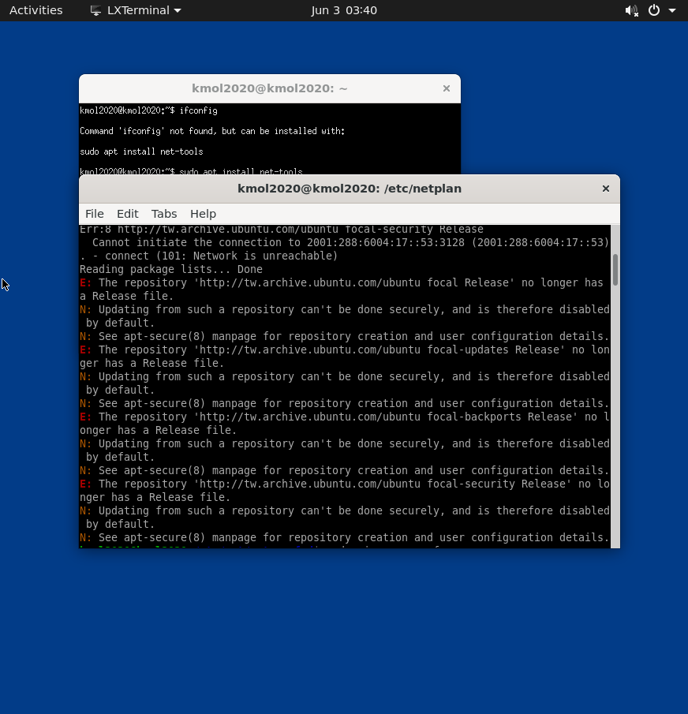

week17期末 <<
Previous Next >> 小組開會紀錄
problem
Q1在下載倉儲後進入近端時wsgi.py並不在該檔案夾中，且無法啟動近端
A由於倉儲在下載時並沒有更新，因此在CODE中可打以下兩行指令進行資料更新推進
1-git submodule init
2-git submodule update
打完後便會更新檔案夾中的資料，會出現wsgi.py啟動檔案，即可正常進入近端

以上為打完程式後可開啟wsgi.py之檔案
Q2為何正常操作近端資料即將上傳時卻無法git add也無法正常推送改版動作
A在經過再三嘗試下重新下載該倉儲網址並重新進入近端並加以改寫後重新推送，即可修正錯誤。
原因:有可能因為重複進入近端的關係造成網頁識別錯誤，無法得知最新改版因此將推送的資料阻擋，並產生衝突(因為重複開啟近端網頁的緣故)
Q3 Leo使用閃退問題
A有可能因為版本老舊而閃退，建議更新版本
1-pip list查看模組列表(先確認leo版本)
2-pip uninstall leo取消安裝leo模組
3-pip install == 6.2.1安裝leo最新版本
最後再次使用leo，問題可能會解決
Q4操作倉儲並上傳資料到github後，移動到cmsimde檔案，如何解決
A將cmsimde中的.git檔案拉出，再另外建立一個檔案(名稱為3149)後，將.git放入3149盪案夾中，先下載最新版本倉儲，再使用git submodule init與git submodule update程式碼更新並抓取最新推送的cmsimde
Q4在協同過程中，有推送上衝突，造成倉儲有所變動

以上為解決衝突問題的指令與過程。
A按照程式所給予的提示先COMMIT，之後是git add 最後在重新推送前去僅端將重複的倉儲版面刪除，並做儲存，之後即可正常運作。
Q在week14裡操作IPV4、6設定時出現錯誤，前提是各種狀況排除後一樣無法正常更新




以上排除狀況過程一樣遇到相同問題的畫面
A之後重新開一個新的操作畫面並重新設定，在同樣操作步驟下得出不一樣的結果(第二次操作時是正確並連接上遠端)
week17期末 <<
Previous Next >> 小組開會紀錄